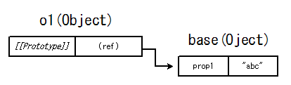

カテゴリ: JavaScript
- [ Prev ]
- [ Next ]
- [ JavaScript ]
※jdk1.6.0_01のjrunscriptを使ってます。
prototype周りで遊んでいたら、こんな疑問が出てきました。
# 1. プロトタイプオブジェクトをオブジェクトリテラルで用意
js> base = { prop1 : 'abc' }
[object Object]
# 2. コンストラクタ用の関数オブジェクトを用意して、1.のオブジェクトをprototypeにセット
js> function C1() {}
js> C1.prototype = base
[object Object]
# 3. C1をコンストラクタにしたオブジェクトを生成。
js> o1 = new C1()
[object Object]
js> o1.prop1
abc
# 4. o1の"prop1"に"DEF"を設定
js> o1.prop1 = "DEF"
DEF
js> o1.prop1
DEF
# 5. プロトタイプオブジェクトの中身は変わってない？
js> base.prop1
abc
ということで、4. と 5. の間で o1 の prop1 プロパティに一体何が起こったのか？ということで、調べてみました。
評価時と代入時の違いが原因
先に結論に入ってしまいます。
オブジェクトのプロパティを単に評価するだけの時は "Prototype" チェーンを辿りますが、代入操作の場合は "Prototype" チェーンを辿らないのが原因です。
内部挙動を簡単に説明すると、4.のように値を取得するだけの時の挙動はこんな感じになっています。
- 対象オブジェクトに、指定されたプロパティがあるかチェック。
- 指定されたプロパティがあれば、その値を返す。
- 指定されたプロパティが無ければ、対象オブジェクトの "Prototype" プロパティの先のオブジェクトにあるかチェック。
- 以下、"Prototype" プロパティが空になる所まで探索を繰り返す。
一方 5. のように値を設定する時の挙動はこんな感じになっています。
- 対象オブジェクトに、指定されたプロパティがあるかチェック。
- 指定されたプロパティがあれば、そこに代入された値をセット。
- 指定されたプロパティが無ければ、新しくプロパティを追加し、代入された値をセット。
図解で見てみれば分かりやすいと思います。
- 1. プロトタイプオブジェクトをオブジェクトリテラルで用意
js> base = { prop1 : 'abc' }
[object Object]
- 2. コンストラクタ用の関数オブジェクトを用意して、1.のオブジェクトをprototypeにセット
js> function C1() {}
js> C1.prototype = base
[object Object]
- 3. C1をコンストラクタにしたオブジェクトを生成。
js> o1 = new C1() [object Object] js> o1.prop1 abc
この時点で "o1.prop1" を評価すると、o1にはprop1プロパティが無い為、prototypeチェーンを辿ったbaseオブジェクトのprop1が返されます。

- 4. o1の"prop1"に"DEF"を設定
js> o1.prop1 = "DEF" DEF js> o1.prop1 DEF
以上のような挙動の為、冒頭で実験したような動きになった訳です。
ところで、あるプロパティが本当にそのオブジェクトの持ち物なのか？prototypeチェーンの先のものなのか？を調べるには、Object.prototype.hasOwnPropertyが使えます。
js> o2 = new C1()
[object Object]
js> o2.hasOwnProperty("prop1")
false
js> base.hasOwnProperty("prop1")
true
参考ECMA262セクション
ECMA262の仕様書を読み慣れるに従い、うかつな解説が出来なくなって参りましたので、ここでは参考にしたセクションを引用するに留めます。
まず代入演算子の仕様です。
11.13.1 Simple Assignment ( = ) The production AssignmentExpression : LeftHandSideExpression = AssignmentExpression is evaluated as follows: 1. Evaluate LeftHandSideExpression. 2. Evaluate AssignmentExpression. 3. Call GetValue(Result(2)). 4. Call PutValue(Result(1), Result(3)). 5. Return Result(3).
GetValue(), PutValue()という(これも解説の便宜上ラベリングされた機能です)メソッドを呼んでいます。この二つの仕様は次の通りです。
8.7.1 GetValue (V) 1. If Type(V) is not Reference, return V. 2. Call GetBase(V). 3. If Result(2) is null, throw a ReferenceError exception. 4. Call the [[Get]] method of Result(2), passing GetPropertyName(V) for the property name. 5. Return Result(4).
8.7.2 PutValue (V, W)
1. If Type(V) is not Reference, throw a ReferenceError exception.
2. Call GetBase(V).
3. If Result(2) is null, go to step 6.
4. Call the [[Put]] method of Result(2), passing GetPropertyName(V)
for the property name and W for the value.
5. Return.
6. Call the [[Put]] method for the global object, passing GetPropertyName(V)
for the property name and W for the value.
7. Return.
それぞれ"Get"/"Put"という仕様上の機能を呼んでいることが読み取れます。"Get"/"Put"の仕様は以下の通りです。
8.6.2.1 [[Get]] (P) When the [[Get]] method of O is called with property name P, the following steps are taken: 1. If O doesn’t have a property with name P, go to step 4. 2. Get the value of the property. 3. Return Result(2). 4. If the [[Prototype]] of O is null, return undefined. 5. Call the [[Get]] method of [[Prototype]] with property name P. 6. Return Result(5).
8.6.2.2 [[Put]] (P, V) When the [[Put]] method of O is called with property P and value V, the following steps are taken: 1. Call the [[CanPut]] method of O with name P. 2. If Result(1) is false, return. 3. If O doesn’t have a property with name P, go to step 6. 4. Set the value of the property to V. The attributes of the property are not changed. 5. Return. 6. Create a property with name P, set its value to V and give it empty attributes. 7. Return. Note, however, that if O is an Array object, it has a more elaborate [[Put]] method (15.4.5.1).
というわけで、今回のJavaScript探索はこの辺でお仕舞いに致します。
- [ Prev ]
- [ Next ]
- [ Up ]
- [ JavaScript ]